인터넷 브라우저에서 아래 주소로 접속합니다. 별도 프로그램 설치는 필요 없고, 휴대폰에서도 됩니다.
https://science-research-webapp.vercel.app
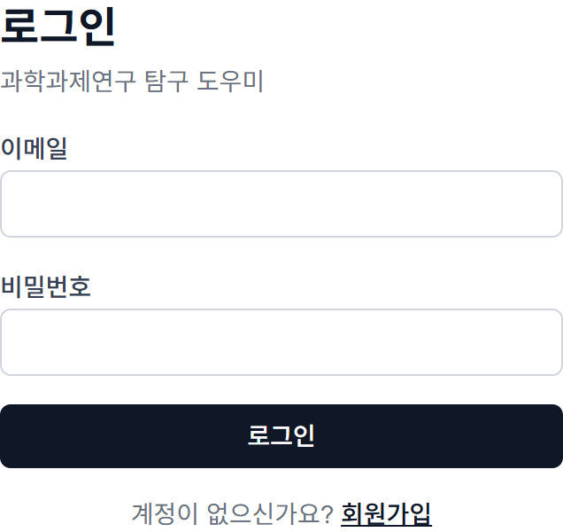
내 계정에서 각자 바꿔주세요.
선생님께 받은 참여 코드 6자리를 입력하면 우리 반에 들어갑니다. 맨 처음 한 번만 하면 됩니다.
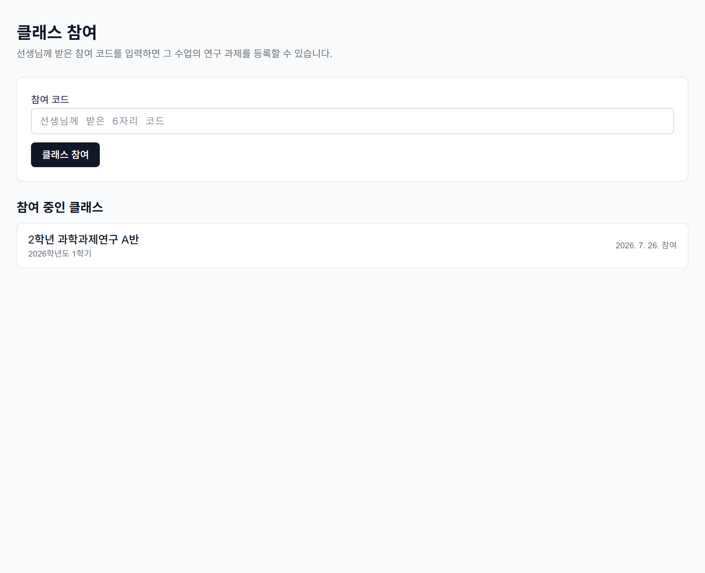
탐구 주제를 등록합니다. 개인 연구도 되고 팀 연구도 됩니다. 팀이면 등록한 사람이 팀장이 되고, 같은 반 친구를 팀원으로 추가할 수 있습니다.
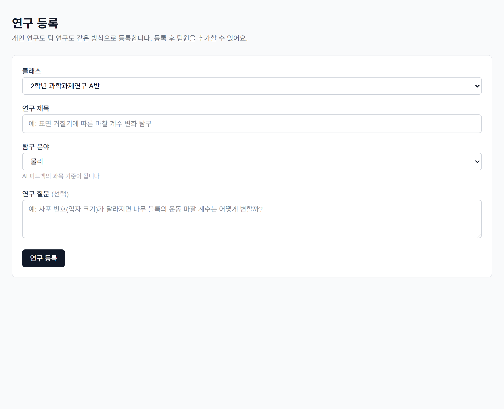
등록한 연구를 열면 아래쪽에 제출 칸이 있습니다.
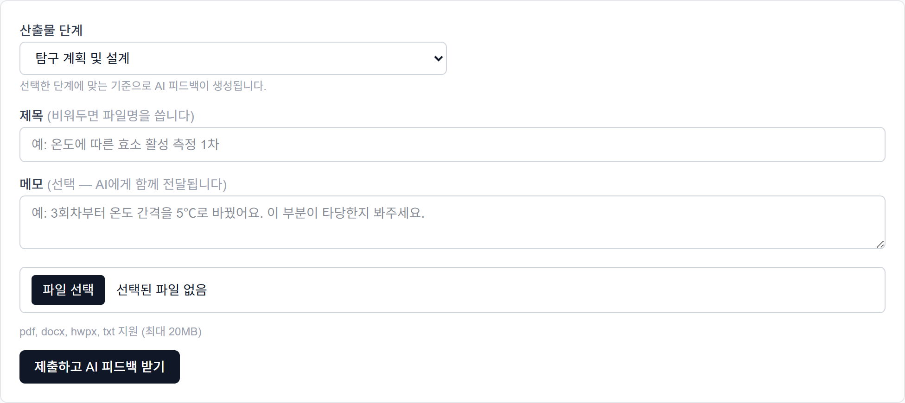
| 단계 | AI가 보는 기준 |
|---|---|
| 탐구 계획 및 설계 | 현실성, 변인 통제, 주제 난이도가 적절한지 |
| 연구 일지 | 기록이 구체적인지, 계획과 달라진 점, 다음에 확인할 것 |
| 중간 · 최종 보고서 | 데이터 해석의 타당성, 오차 분석 |
.hwp는 지원하지 않습니다. 한글에서 다른 이름으로 저장 → HWPX로 저장해 올려주세요.
PDF는 표·그래프·사진까지 AI가 함께 봅니다.
제출한 산출물 아래에 AI 탐구 조력자의 피드백이 붙습니다. 정답을 알려주는 것이 아니라 스스로 생각해볼 질문을 던지는 방식입니다.
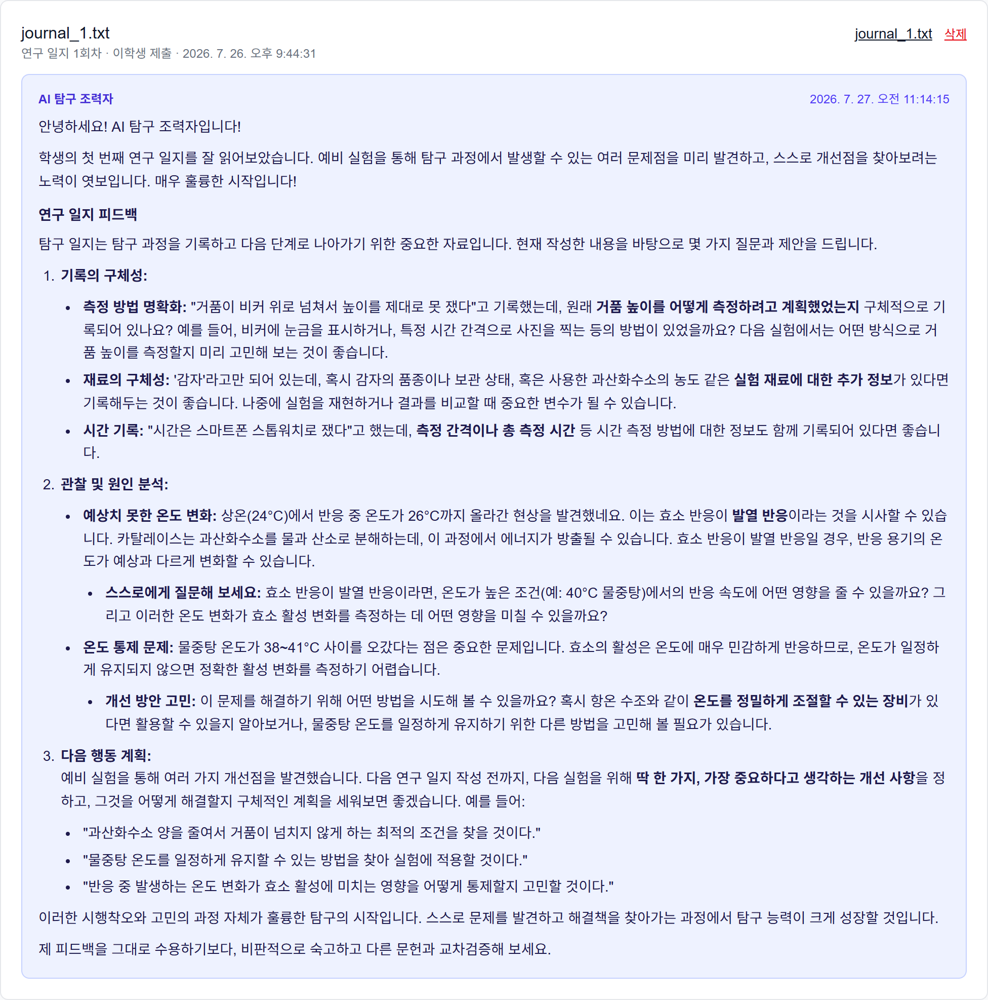
AI 피드백 다시 받기 버튼을 눌러주세요. 제출물은 사라지지 않습니다.
제출이 한꺼번에 몰리면 피드백 생성이 느려집니다. 지금 어느 정도인지 미리 알 수 있도록 화면 오른쪽 위에 표시됩니다. 최근 30분 동안 실제로 걸린 시간을 기준으로 하며, 제출이 없어 판단할 근거가 없으면 아무것도 표시되지 않습니다.
| 표시 | 뜻 | 이렇게 하세요 |
|---|---|---|
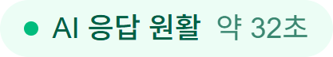 |
평소 속도 | 그냥 제출하면 됩니다. |
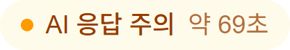 |
평소보다 느림 | 피드백이 조금 늦게 옵니다. 기다려주세요. |
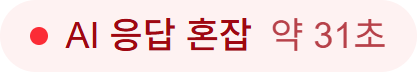 |
많이 지연됨 | 피드백이 한참 걸리거나 실패할 수 있습니다.
다시 올리지 마세요. 나중에 다시 받기로 받으면 됩니다. |
옆에 적힌 초는 최근 피드백 생성에 걸린 시간입니다. 표시에 마우스를 올리면 자세한 설명이 나옵니다.
마지막으로, AI 피드백은 참고 자료입니다. 그대로 받아들이기보다 비판적으로 따져보고 교과서나 다른 문헌과 교차검증해 보세요.
삭제를 누릅니다.
본인이 올린 것만 지울 수 있습니다.연구 과제 삭제를
누릅니다. 연구를 만든 사람(팀장)만 할 수 있고, 팀원에게는 보이지 않습니다.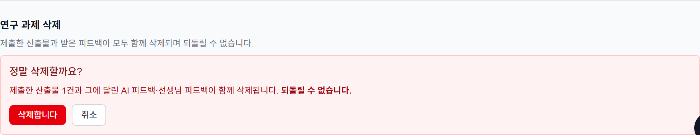
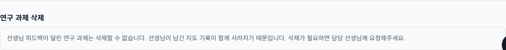
선생님이 올린 과제에 파일을 제출합니다. 앞의 연구 산출물과는 다릅니다 — 산출물은 내 연구에 딸린 것이고, 과제는 반 전체에 내주는 것입니다. 과제 제출물에는 AI 피드백이 붙지 않습니다.
대시보드 위쪽 과제 · 평가 목록에서 지금 무엇이 남았는지 한눈에 보입니다.
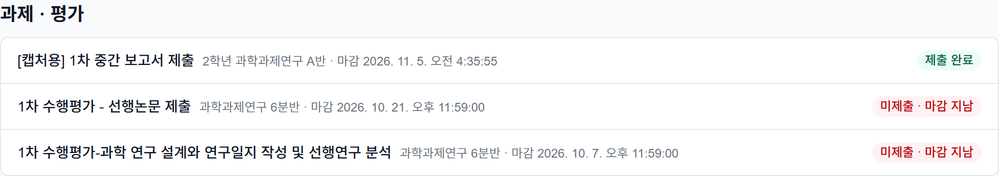
과제를 누르면 안내와 마감을 확인하고 파일을 올릴 수 있습니다. 메모를 함께 적으면 선생님께 전달됩니다.
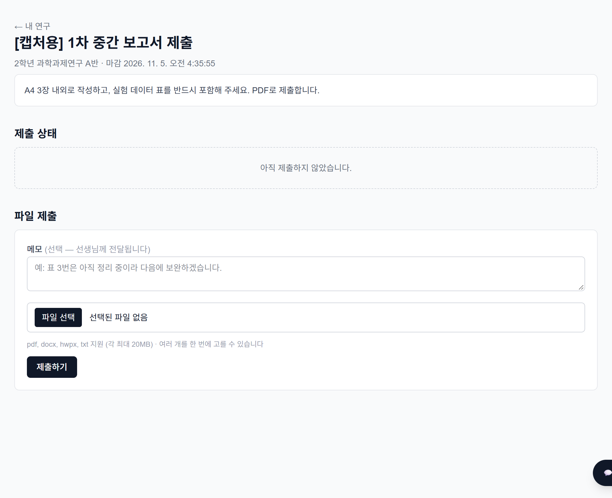
파일은 여러 개 낼 수 있습니다. 한 번에 여러 개를 골라도 되고,
나중에 파일 더 제출하기로 보태도 됩니다. 이미 낸 파일은 그대로 남고
새 파일이 목록에 더해집니다.
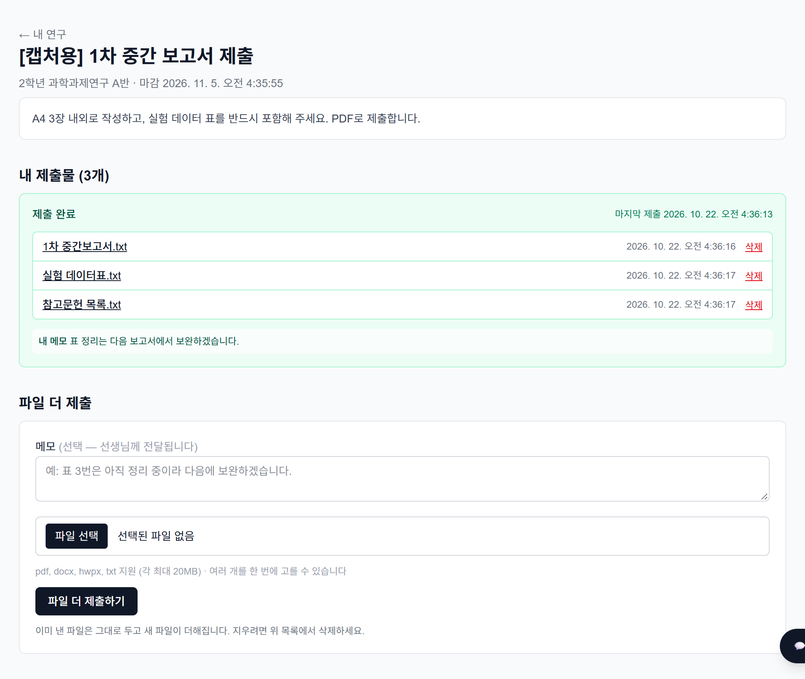
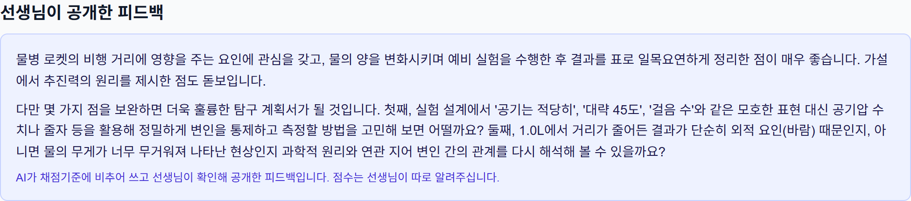
로그인하면 담당 클래스와 검토가 필요한 산출물이 한눈에 보입니다.
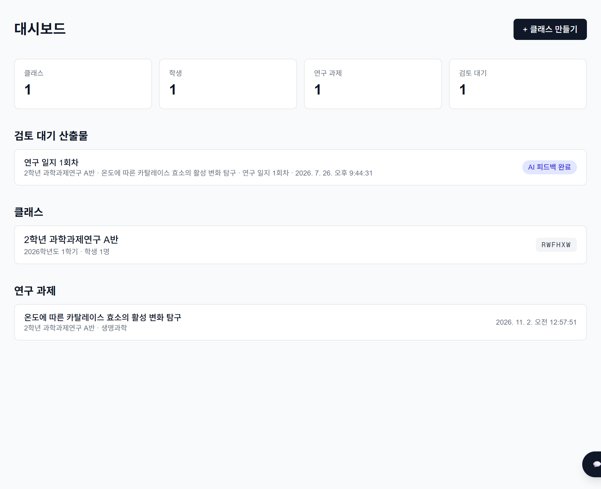
학생 산출물과 AI 피드백을 나란히 보고, 이어서 지도 피드백을 남깁니다.
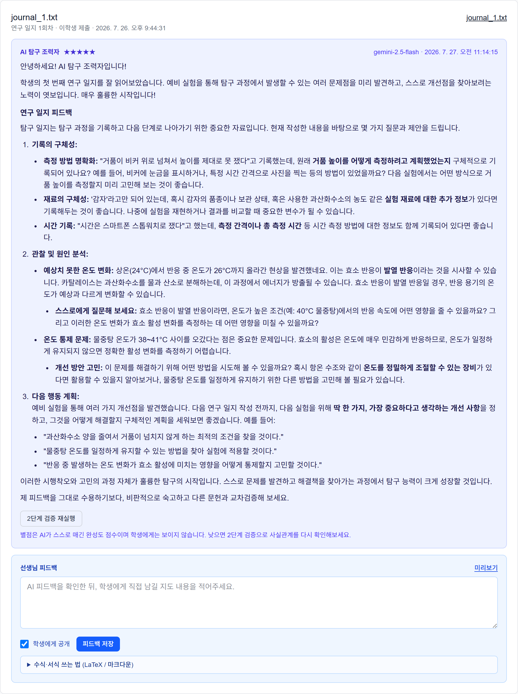
2단계 검증 재실행으로 사실관계를 다시 확인시킬 수 있습니다.
학생이 잘못 만든 연구 과제는 담당 선생님이 정리할 수 있습니다. 연구 과제 페이지 맨 아래
연구 과제 삭제를 누르면 됩니다.
입력칸에 적고 피드백 저장을 누르면 학생 화면에 나타납니다.
학생에게 공개 체크를 풀면 나만 보는 메모로 남길 수 있습니다.
피드백에는 수식과 서식을 쓸 수 있습니다.
미리보기를 누르면 학생에게 어떻게 보일지 바로 확인됩니다.
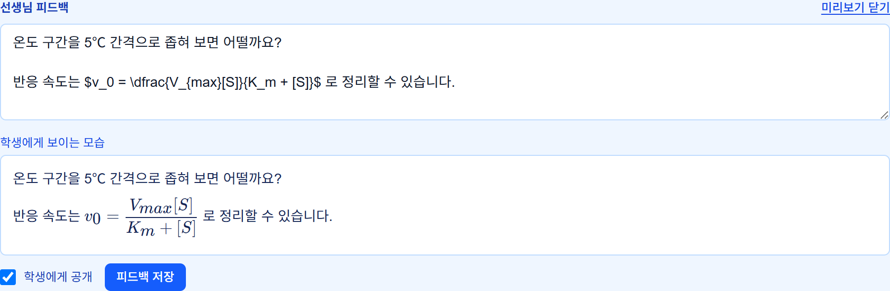
입력칸 아래 수식·서식 쓰는 법을 펼치면 자주 쓰는 표현이 예시와 함께 정리되어 있습니다.
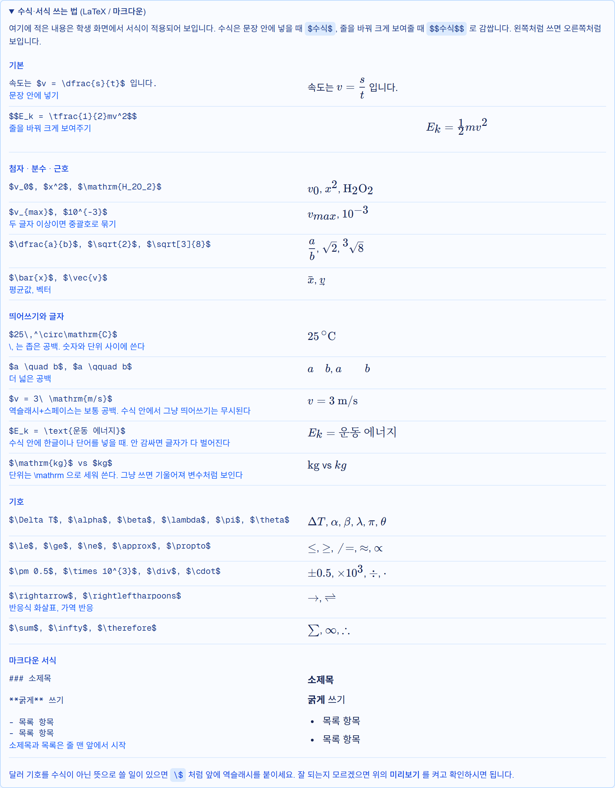
클래스 화면의 과제 · 평가에서 제목과 안내, 마감 일시를 적어 등록합니다.
마감은 선택이며, 지나도 학생 제출을 막지는 않습니다.
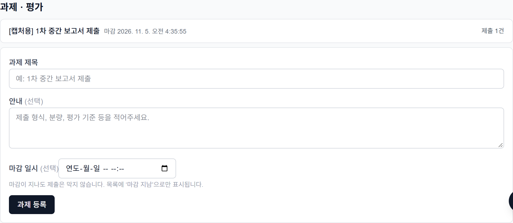
과제를 누르면 제출 현황이 나옵니다. 학생이 낸 파일을 눌러 바로 내려받을 수 있습니다. 한 학생이 파일을 여러 개 냈다면 이름 아래에 모두 나열됩니다.
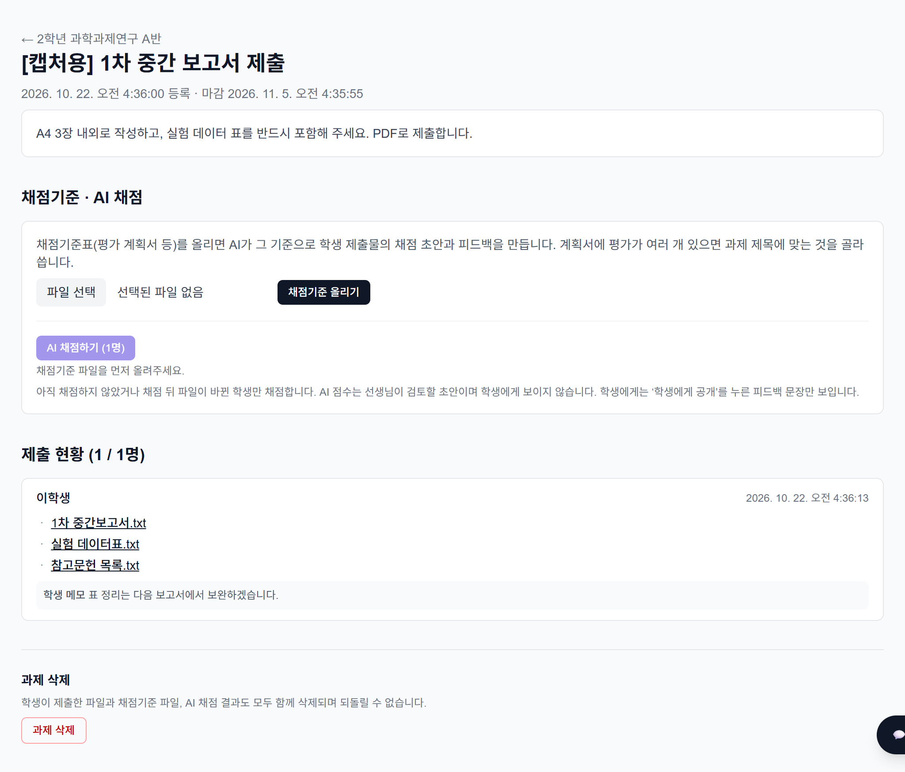
채점기준 · AI 채점에서 채점기준 파일(평가 계획서 등)을 올립니다.
계획서에 평가가 여러 개 있으면 과제 제목에 맞는 것을 골라 씁니다.AI 채점하기를 누르면 아직 채점하지 않은 학생을 한 명씩 채점합니다.
한 명에 10~30초쯤 걸립니다.학생에게 공개를 누르면 학생 화면에 피드백 문장만 보입니다.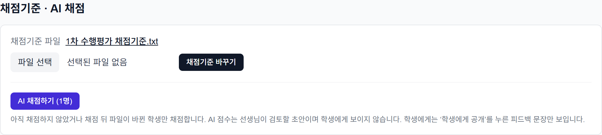
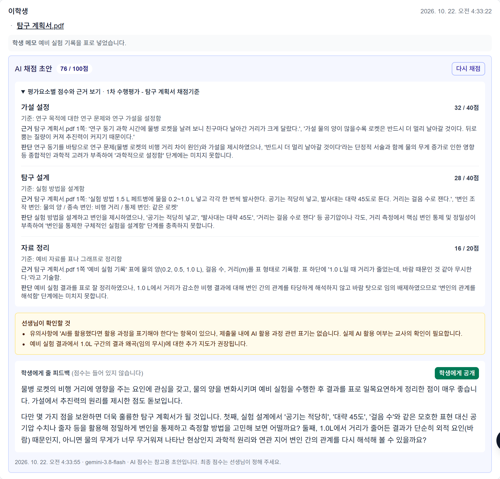
클래스 화면 맨 아래 학생 명단에서 이름을 누르면, 그 학생의 연구 산출물
(hwpx · docx · txt는 본문까지)과 과제 제출물, AI 채점 결과를 한 화면에서 볼 수 있습니다.
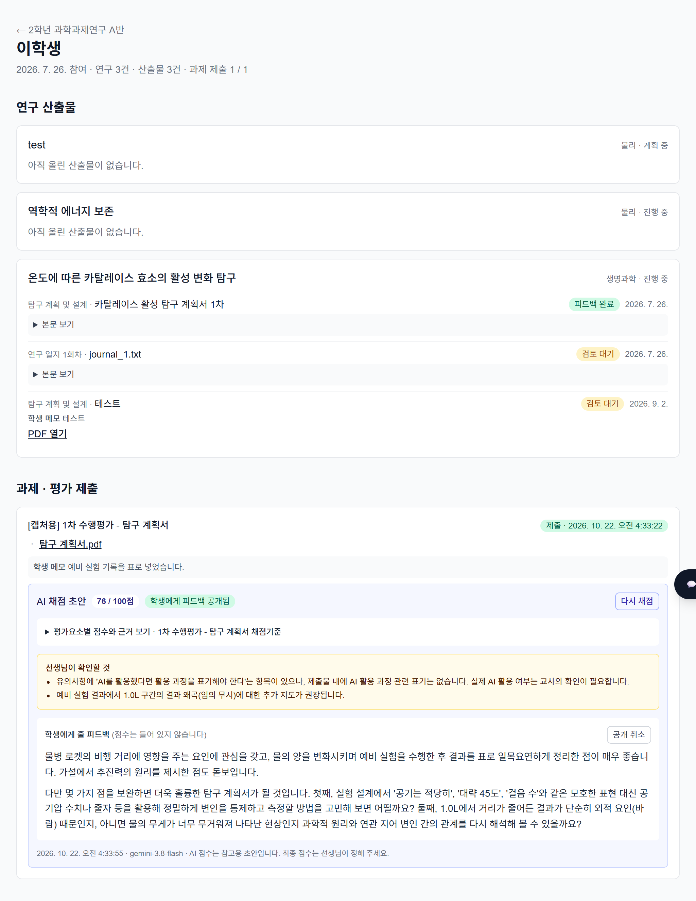
| 상황 | 이렇게 하세요 |
|---|---|
| 한글 파일을 못 올리겠어요 | .hwp는 지원하지 않습니다. 한글에서 다른 이름으로 저장 → HWPX로 저장해 올리세요. |
| 제출 버튼을 눌렀는데 오래 걸려요 | ‘AI 피드백 받는 중’이면 제출은 이미 끝났습니다. 창을 닫아도 됩니다. |
| AI 피드백이 안 보여요 | 생성 중일 수 있습니다. 잠시 뒤에도 없으면 다시 받기를 누르세요. |
| 오늘 피드백을 더 못 받아요 | 학생 1인당 하루 사용 횟수 제한이 있습니다. 다음 날 다시 되고, 급하면 선생님께 문의하세요. |
| 산출물을 잘못 올렸어요 | 본인이 올린 산출물은 목록에서 삭제할 수 있습니다. |
| 연구 과제를 잘못 만들었어요 | 연구 과제 페이지 맨 아래 연구 과제 삭제를 누릅니다. 연구를 만든
사람(팀장)만 할 수 있고, 산출물과 피드백이 모두 함께 사라집니다. |
| 삭제 버튼이 안 보여요 | 선생님 피드백이 달린 과제는 학생이 지울 수 없습니다. 담당 선생님께 삭제를 요청하세요. 팀원인 경우에도 보이지 않습니다 — 팀장에게 부탁하세요. |
| 과제에 AI 피드백이 안 달려요 | 과제에는 자동 AI 피드백이 붙지 않습니다. 선생님이 AI 채점 뒤 공개하면 과제 화면에 ‘선생님이 공개한 피드백’이 나타납니다. |
| 과제 마감이 지났어요 | 그래도 제출할 수 있습니다. 선생님 화면에 ‘지각 제출’로 표시됩니다. |
| 과제를 잘못 제출했어요 | 고친 파일을 다시 올린 뒤, 잘못 낸 파일을 목록 오른쪽 삭제로 지우면
됩니다. 새로 올린다고 이전 파일이 자동으로 없어지지는 않습니다. |
| 비밀번호를 바꾸고 싶어요 | 오른쪽 위 이름을 눌러 내 계정에서 변경합니다. |